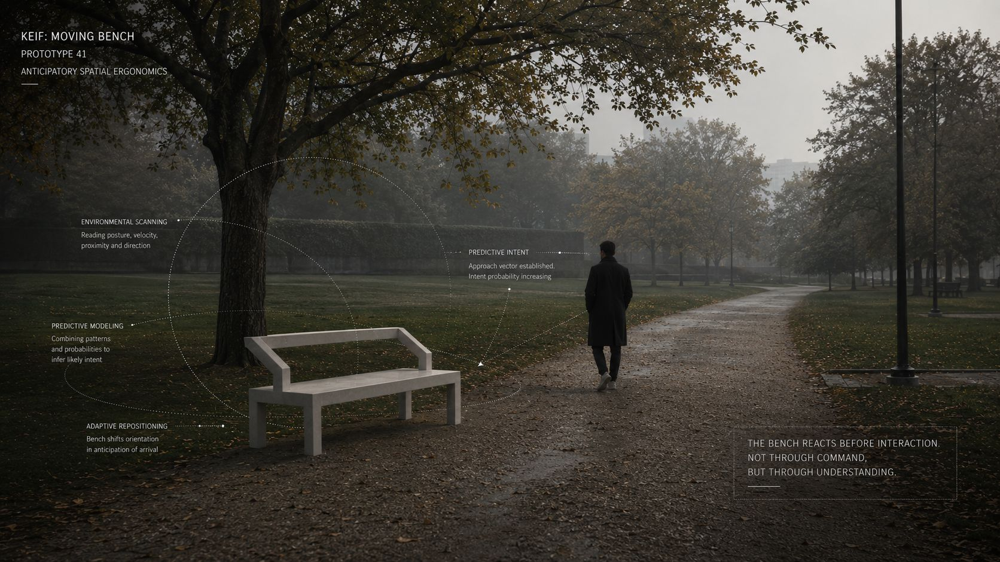
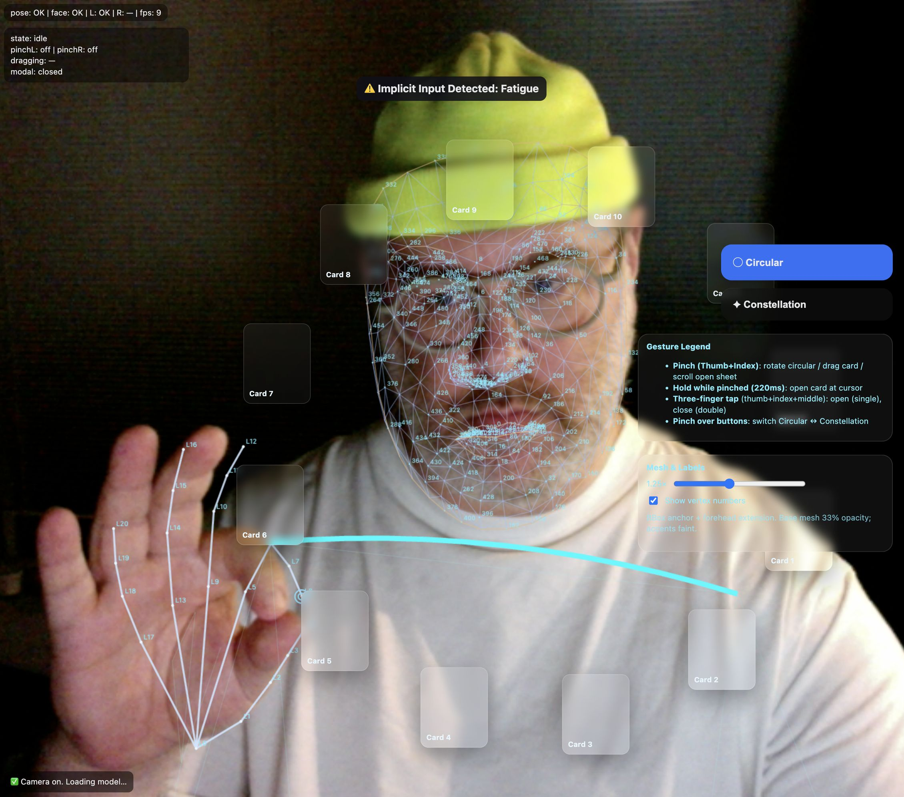
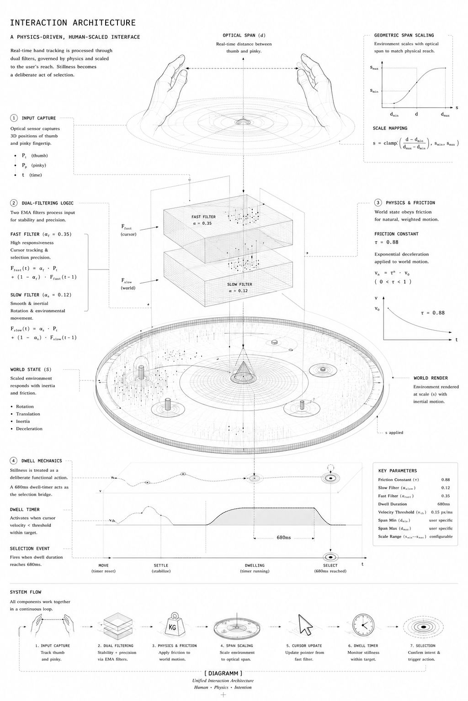
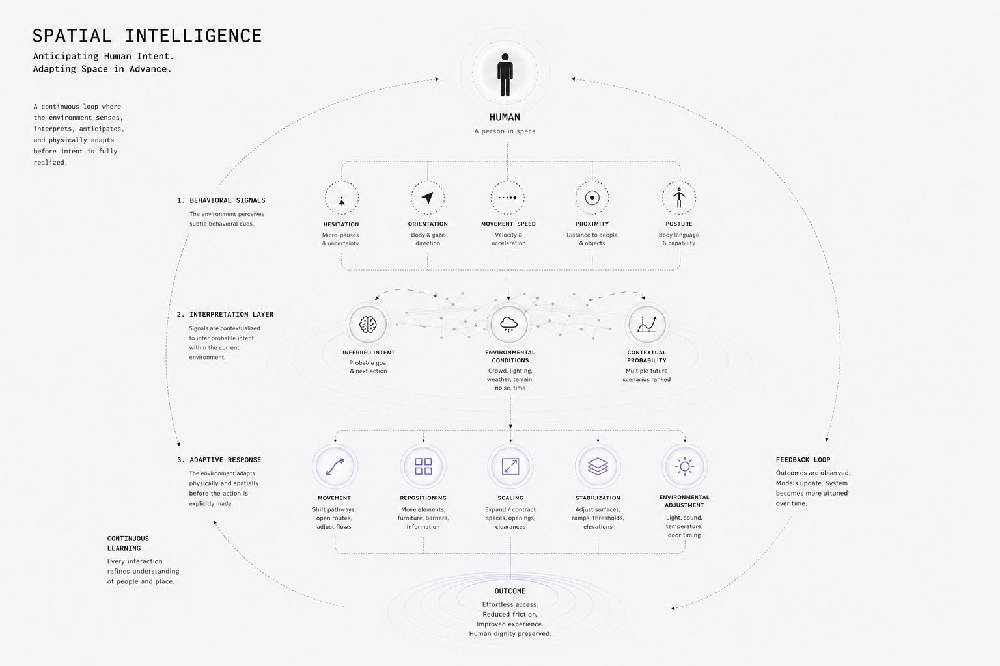
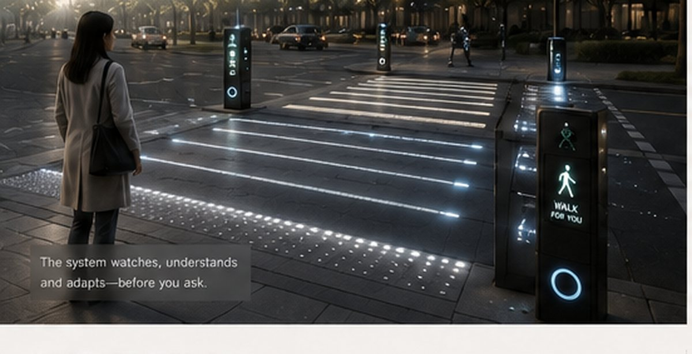
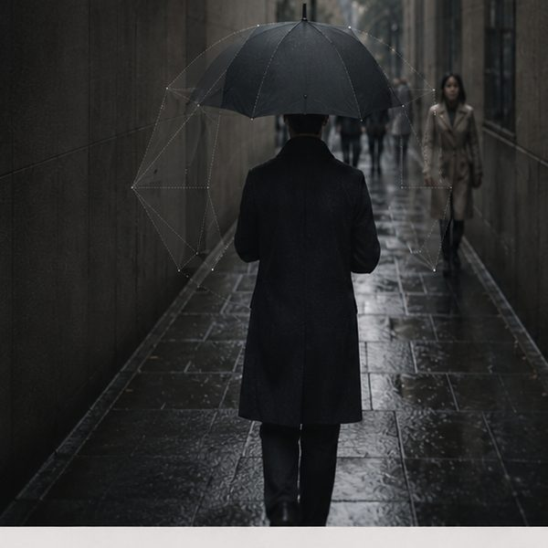
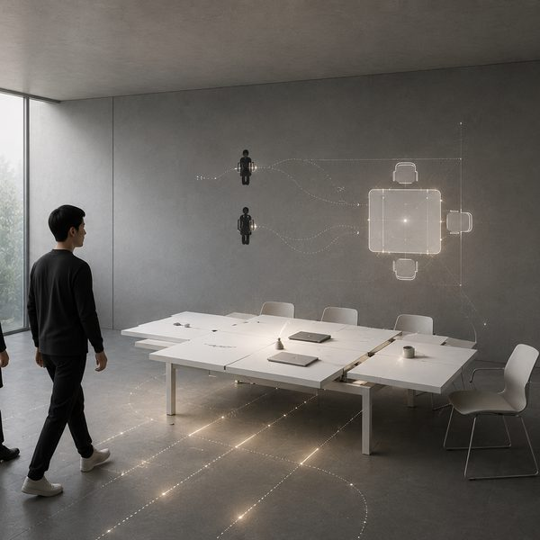
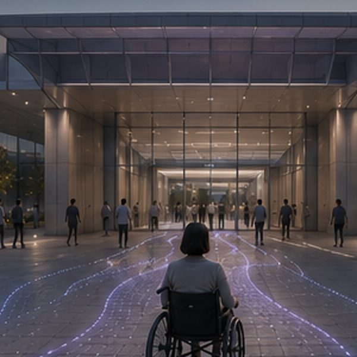

KEIF:Moving Bench
Imagine sitting on a park bench when it begins to rain, and the bench responds, providing for you, simply because you are there. Imagine objects that don’t wait for you to touch them, that react simply because you’ve arrived.
That question is what Moving Bench is built on.

What if the bench had a sense
of empathy?
Objects today share our space but anticipate nothing. They sit behind glass, or sit in the room inert, indifferent to us until we issue a physical command: a click, a tap, a press. This creates a constant command and response loop that is more tiring than it looks. Touchless systems are meant to solve it, but they usually make it worse: holding a gesture in midair produces “gorilla arm,” where the effort of interacting outweighs anything you gain.
The problem isn’t touch versus touchless. It’s that the object waits to be commanded at all.

Interaction in the physical world doesn’t begin with a touch. It begins with presence. Before you reach for something, you’ve already approached it, oriented toward it, slowed down near it. Prototype 41 treats those moments, proximity, hesitation, directional momentum, the way a hand opens before it acts, as meaningful interaction states in their own right, not noise to be filtered out before the “real” command arrives.
Instead of forcing the body to conform to the hardware, the interface follows the logic of the body, treating the air as a functional surface with weight, friction, and momentum.

Dual Filtering Logic
Two Exponential Moving Average (EMA) filters manage live input to ensure stability.
- Slow Filter (α = 0.12): manages the physics of rotation and environmental movement, providing a sense of mass and inertia.
- Fast Filter (α = 0.35): handles high speed cursor tracking and selection precision.
Physics and Friction
The world state is governed by a friction constant of 0.88. This ensures that digital elements behave like physical objects with weight, preventing the “twitchy” or jittery movement common in optical sensing.
Geometric Span Scaling
The environment breathes and scales based on the optical distance between the thumb and pinky finger. The interface literally adjusts its dimensions to match the physical reach of the user in real time.
Dwell Mechanics
Stillness is treated as a deliberate functional action. A 680 ms dwell timer acts as the selection bridge, rewarding focus and intent over constant motion.
Partway through development, the system began behaving less like a cursor and more like a spatial organism. Movement stopped reading as direct control and started reading as tension, proximity, resistance, and drift inside a shared field. It was no longer reacting to commands. It was negotiating proximity, inertia, hesitation, and intent.
That small behavioural shift turned out to be the whole idea. This is what predictive, embodied ergonomics actually feels like from the inside, and it became the foundation everything else in KEIF builds on.

Everything above happens on a screen. But the principle doesn’t live in the screen. It lives in the relationship between a person and a responsive field.
The real question Prototype 41 raises is what happens when physical objects inherit this logic. Today, objects share our space but anticipate nothing; they wait to be operated, exactly like the indifferent interface. If an object could read the conditions around a person, their proximity, their state, their environment, and adapt before being asked, the entire texture of using it would change.
The bench is the demonstration. These are early sketches of where the principle goes next.


Umbrella Adaptability
An umbrella that responds to its own situation. It contracts in a crowd or a narrow space and opens out when there is room, adapting its form to protect the person without them managing it. Anticipatory function at the scale of a single object you carry.

Workstation Adaptability
A workstation that isn’t a fixed table but a responsive arrangement, surface and seating that move on their own. When the sun falls too harshly across it, the table drifts out of the light; when a group of four gathers, the station reconfigures around them. It adapts in its own breath, rather than waiting for someone to drag a chair or adjust a blind.
Public Adaptability
Environments that respond to crowds, reading how people gather, flow, and bottleneck, and reshaping to move them through space more easily. Anticipatory design at the scale of many bodies at once.

Barrier Free Adaptability
Physical environments that reconfigure for an individual in the moment, using sensing and AI to read who is moving through and how, and changing physically to help them. Anticipation in service of access. Space that adjusts to a person’s needs instead of forcing the person to adjust to it.
Prototype 41 exists as an early exploration into systems capable of adapting through inferred behavioural understanding rather than explicit instruction alone.
Rather than optimizing only for efficiency, KEIF investigates how objects, environments, and interfaces might eventually negotiate with human presence in more spatially responsive and physically supportive ways.
The Moving Bench functions as one exploratory study within a broader investigation into anticipatory behavioural adaptation across future systems.